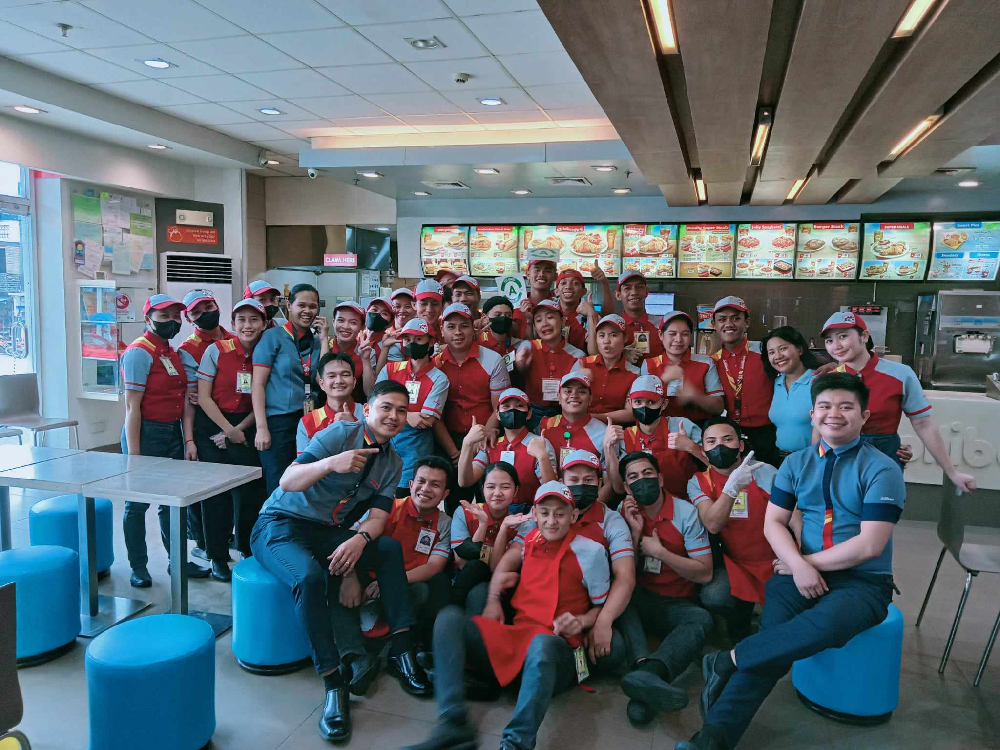
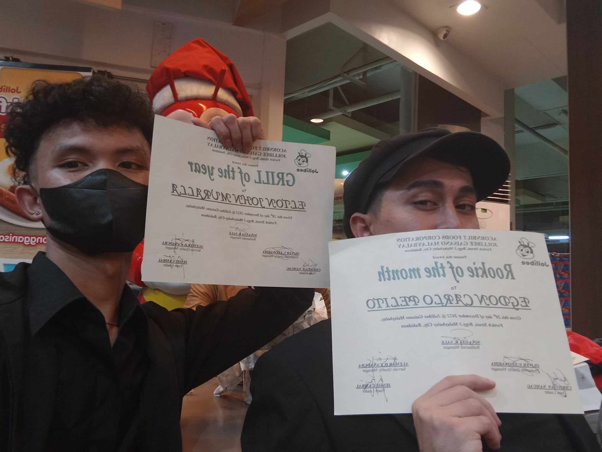
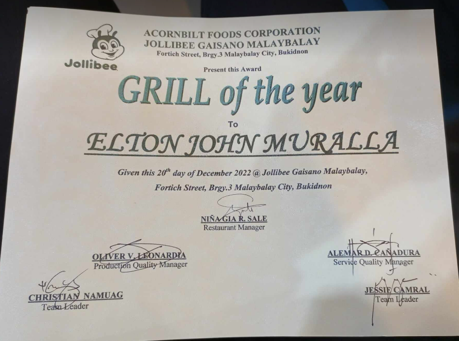
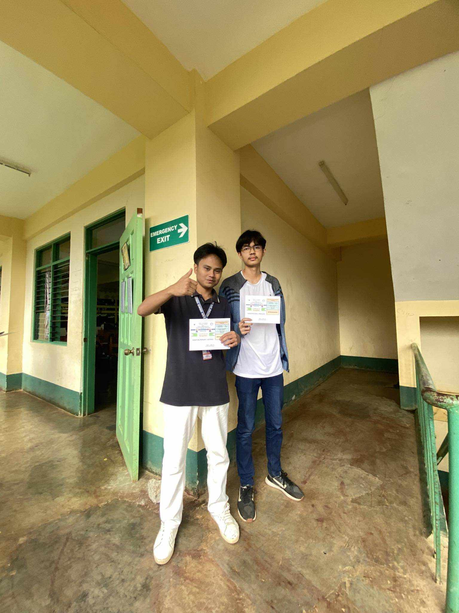
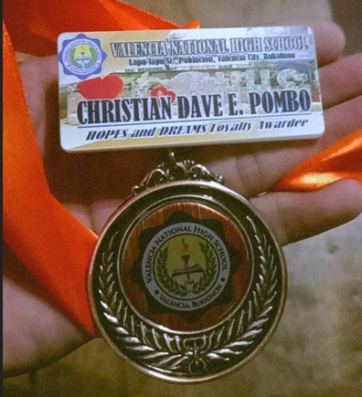
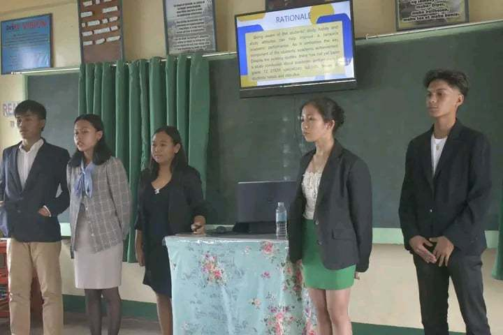
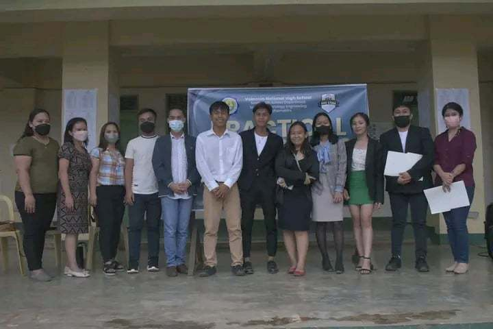
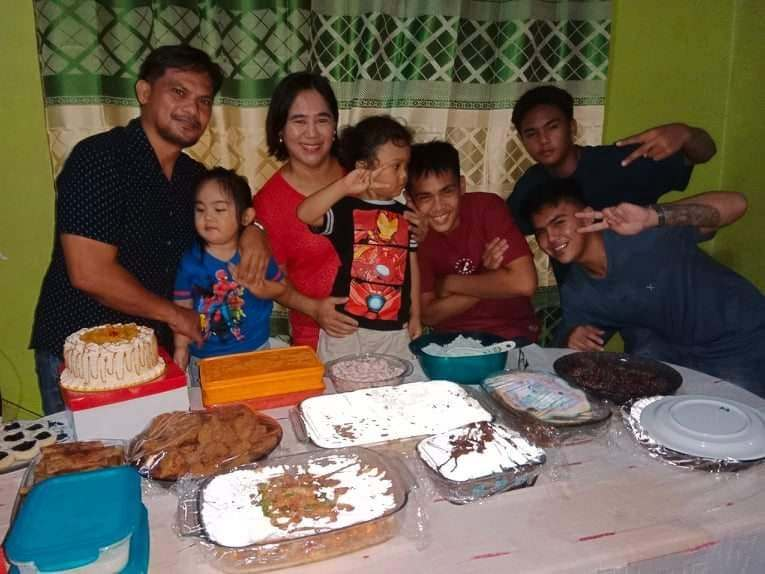
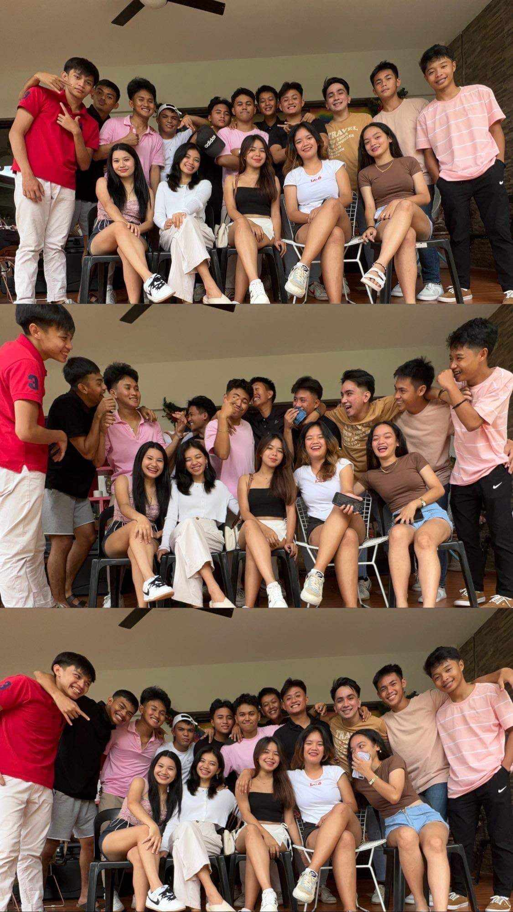

PORTFOLIO
EJ's Portfolio
  
I currently work at Jollibee Gaisano where I got a certificate being the Grill of the Year and also got a Gold Rating letter "A" passing the Food Safety Compliance and The Standard Operating Procedure.
Here are some of my works of edited videos on capcut.
Edgar's Portfolio


Hi so this is my biggest achievement when I was in senior i never thought that I'll be one of those students who'll be called in front because they're honors so for me as a student who don't really like studying or learning by my own is a big achievement for me because even if I'm lazy I still manage to achieve this wonderful achievement.
Through the months and days that I manage to stay positive when it comes to the lessons and quizzes so I've learned a lot of things such as in coding and specially by doing a website like this is not easy for me because I don't know what to do but thankfully that our sir let us group into 4 and it makes easier for us to complete the task and also I've learned alot in C language I might not that good but I still manage to get enough lessons to understand some of its process's and what do I need to work the code.
Christian's Portfolio
  
Hi so this is my biggest achievement when I was in senior i never thought that I'll be one of those students who'll be called in front because they're honors so for me as a student who don't really like studying or learning by my own is a big achievement for me because even if I'm lazy I still manage to achieve this wonderful achievement.
Through the months and days that I manage to stay positive when it comes to the lessons and quizzes so I've learned a lot of things such as in coding and specially by doing a website like this is not easy for me because I don't know what to do but thankfully that our sir let us group into 4 and it makes easier for us to complete the task and also I've learned alot in C language I might not that good but I still manage to get enough lessons to understand some of its process's and what do I need to work the code.
Ian's Portfolio
 
Dedicated to family and friends, I find joy in creating lasting bonds and sharing laughter. Loyalty and warmth shape my approach to life, making every moment richer through meaningful connections.